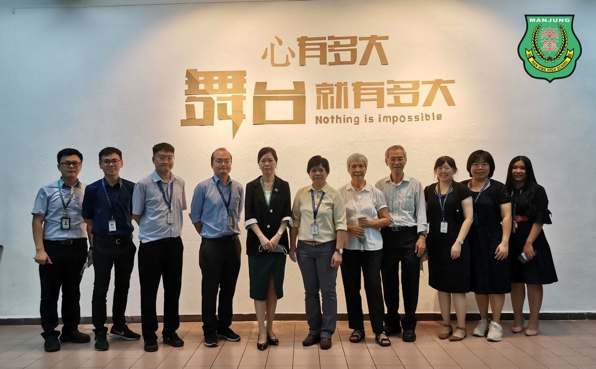
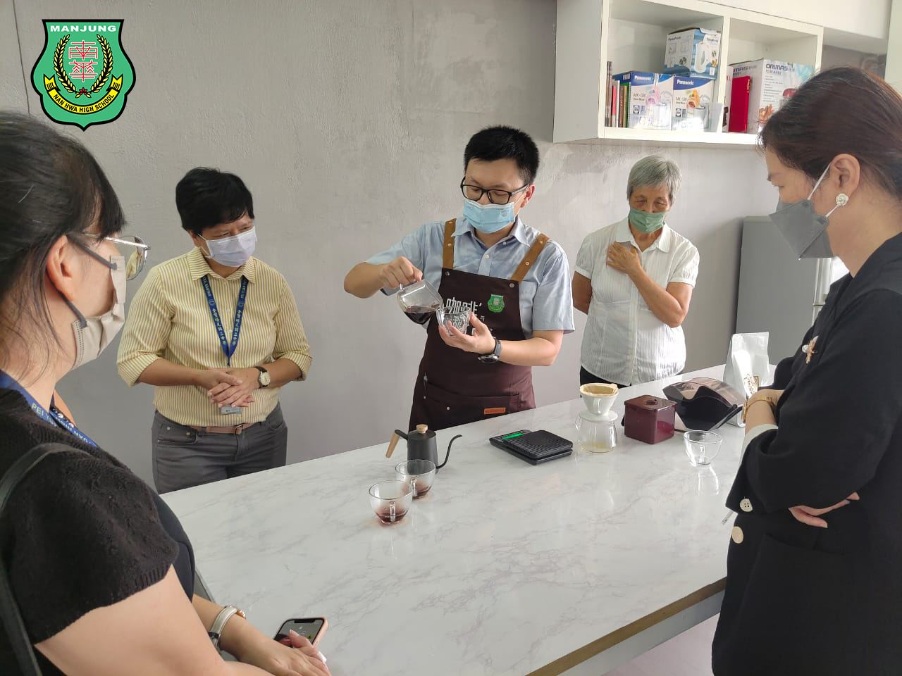
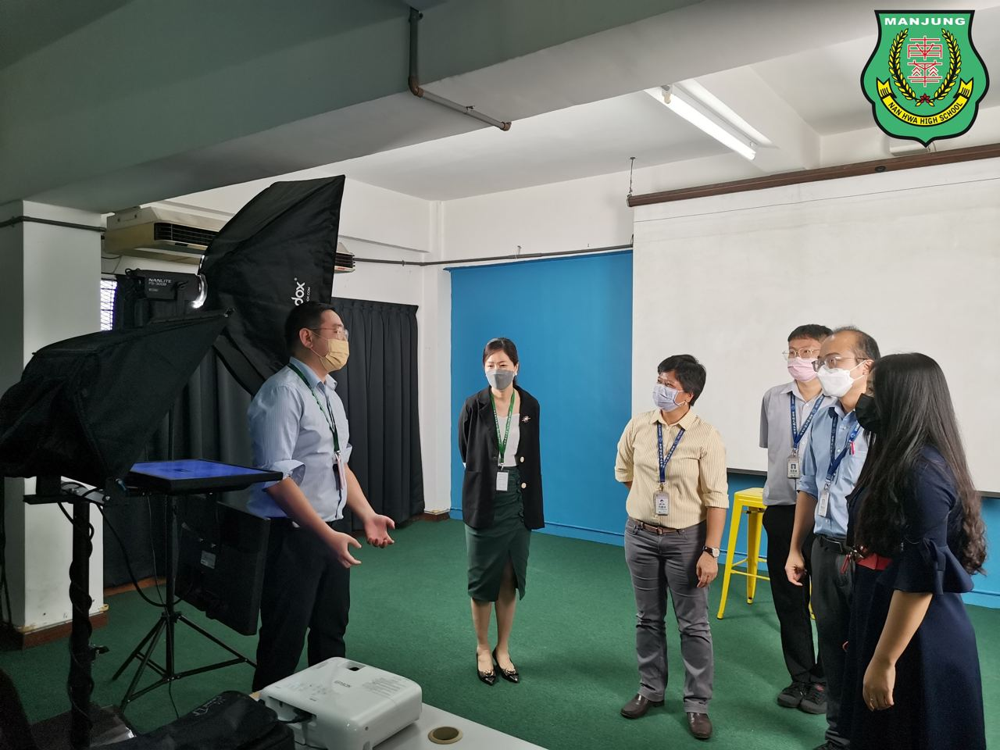
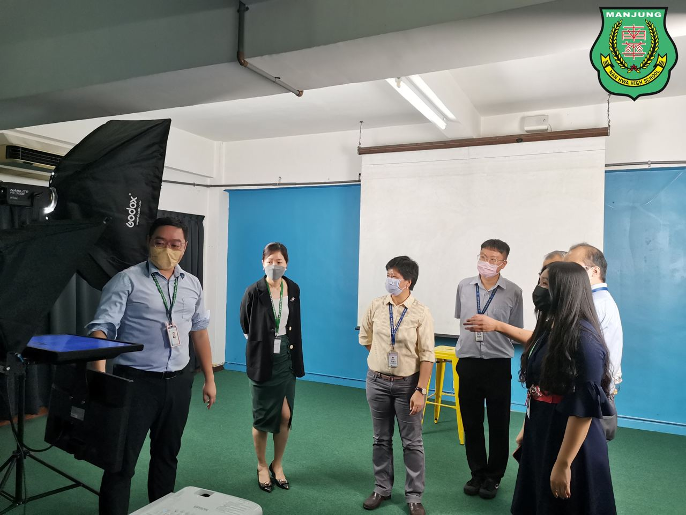
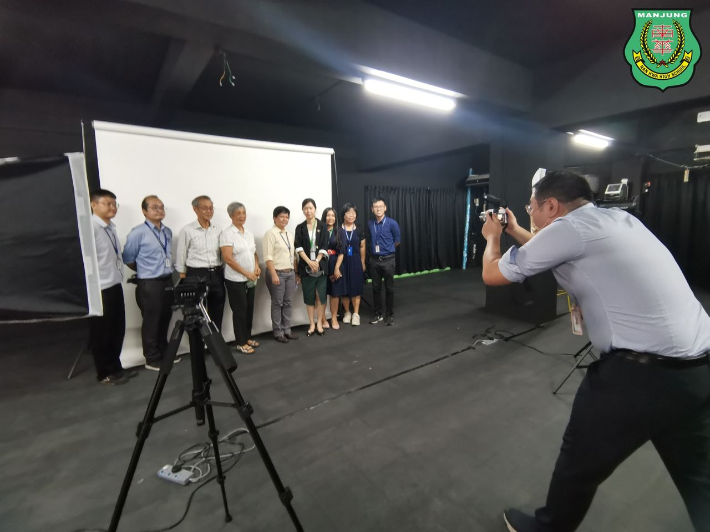
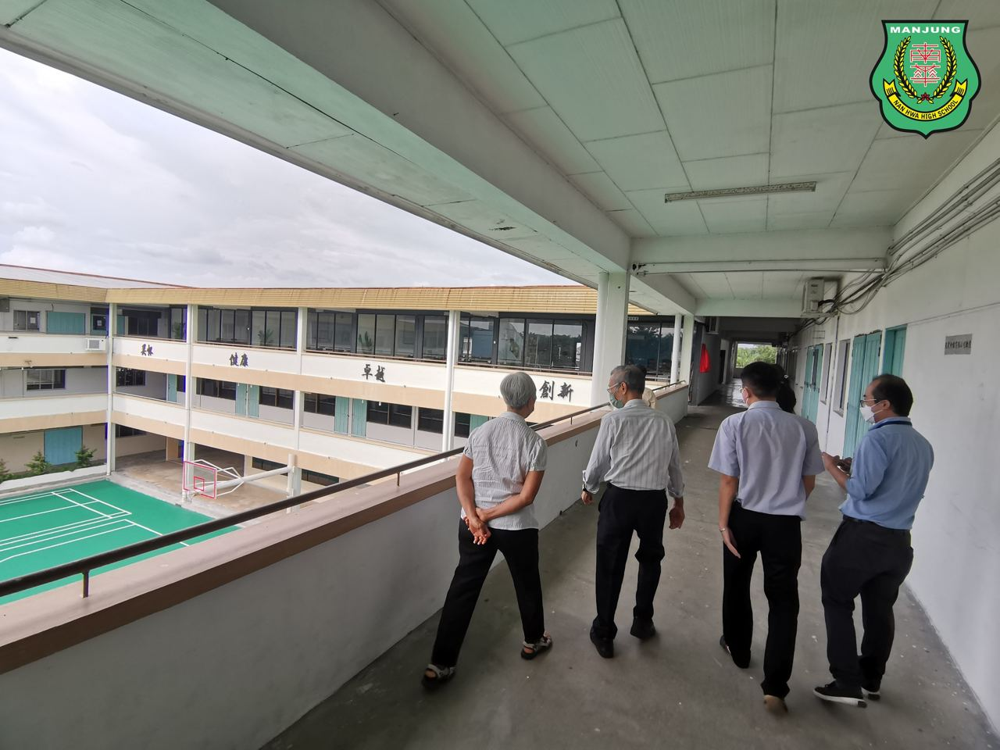
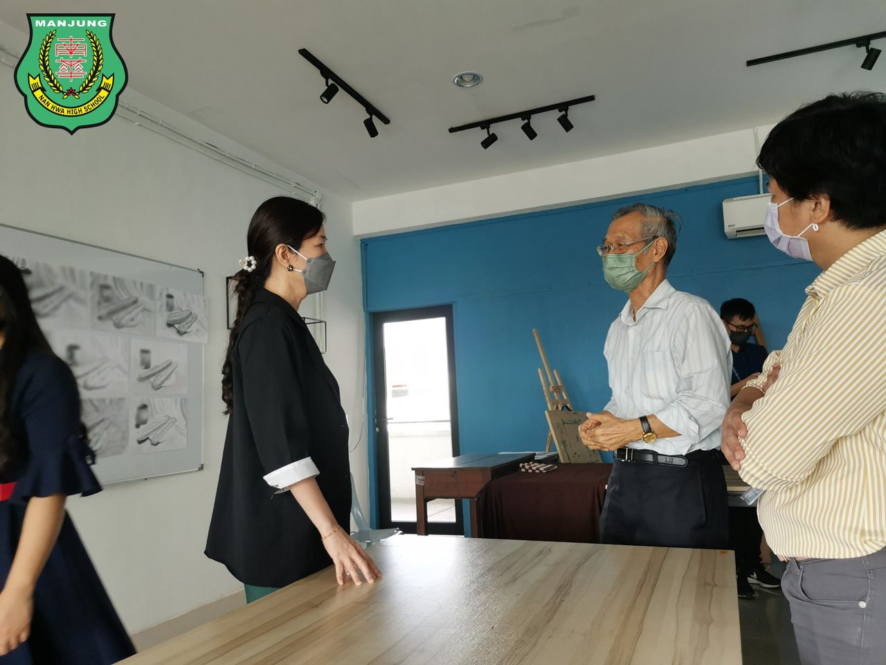
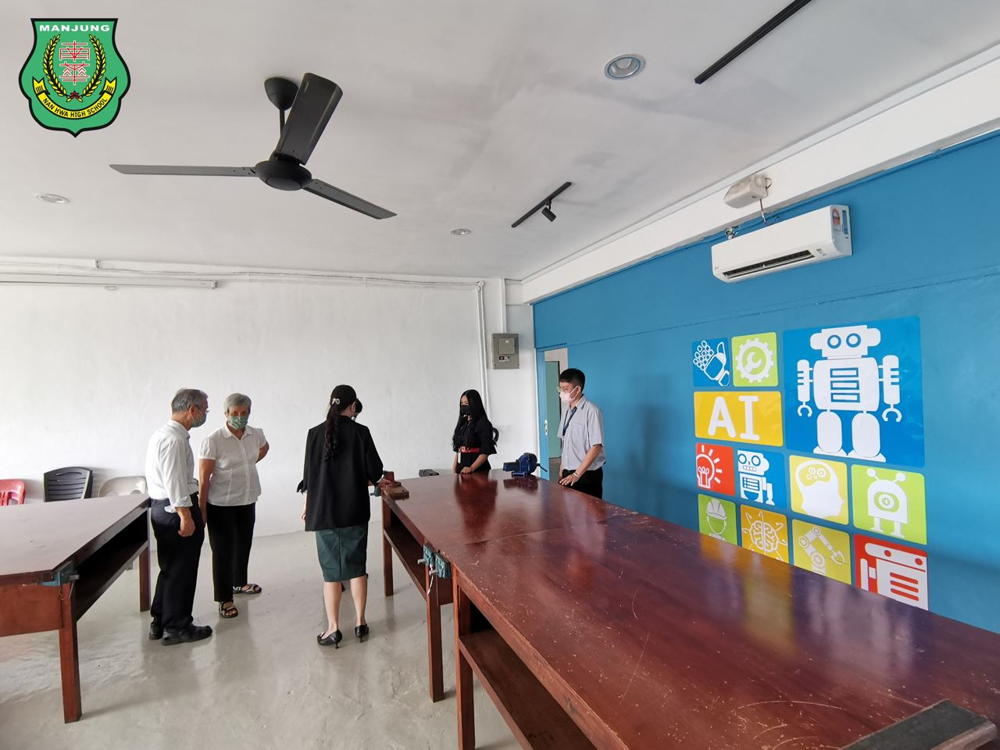

金宝培元独中董事带领行政团队访南华独中
金宝培元独中董事带领行政团队访南华独中
取经探讨校本课程及选修课
金宝培元独中为了有效定制校本课程及探讨选修课的实施，董事胡苏安博士与陆瑞玲博士及刘婉冰校长于日前带领其校行政团队，专访南华独中取经。
南华独中极具特色的初中校本课程开展至今将满一年，高中选修课则已有半年，即将在年底12月3日的校园开放日验收学生的学习成果。校本与选修课程秉着 “学会读书·学会做人”的办学方针，采用跨学科的教学模式与主题活动形成多元综合课程，引导学生发掘学习的热忱，并将兴趣成为一技之长。
培元独中董事胡苏安博士不仅认可校本与选修课程的设立宗旨，也认为此类课程非常符合教育改革之路的新方向，尤其是南华独中以中华文化为办学理念，在革新之余并未抛弃优良的传统文化。刘婉冰校长表示，要推动校本与选修课程，其核心动力必定来自全校上下齐心，为此前往拜访南华独中，借鉴该校开办出如此多元丰富的课程的办法。
南华独中陈丽冰博士回应中表示，除了方向明确的办学愿景与方针，更重要的是董事会、家长联谊会、校友会以及劳苦功高的老师们，为了开办课程不辞劳苦。陈校长强调，最关键的是全校达成共识，并踏出最艰难的第一步。“自从校本与选修课开办以后，热心的校友与外界人士的关心纷至沓来，一砖一瓦都是为了孩子的教育而建，大家身体力行地体现出‘再穷也不能穷教育’的精神”。
#金宝培元 #莅临参访 #校本课程 #选修课程
#南华独中 #曼绒 #实兆远







